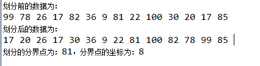

1. Resumen:
Este artículo presenta los principios de varios algoritmos de ordenación comunes y su implementación en Java, incluyendo los algoritmos de ordenación simples y avanzados, así como otros conocimientos de algoritmos de uso común.
- Ordenación simple: ordenamiento de burbuja, ordenamiento por selección, ordenamiento por inserción
- Ordenación avanzada: ordenamiento rápido, ordenamiento por fusión, ordenamiento de Shell
- Conocimientos relacionados con algoritmos: división, recursión, búsqueda binaria
2. Ordenamiento de burbuja:
(1) Principio:
- 1. Comenzando desde el primer dato, compáralo con el segundo dato; si el segundo dato es menor que el primero, intercambia las posiciones de los dos datos.
- 2. El puntero se mueve del primer dato al segundo dato; se compara el segundo dato con el tercero; si el tercer dato es menor que el segundo, intercambia las posiciones de los dos datos.
- 3. Y así sucesivamente, se completa la primera ronda de ordenamiento. Al finalizar la primera ronda, el elemento más grande se ha movido al extremo derecho.
- 4. Siguiendo el proceso anterior, se realiza la segunda ronda de ordenamiento, colocando el segundo más grande en la penúltima posición.
- 5. Repite el proceso anterior; cada vez que se completa una ronda, el número de comparaciones se reduce en uno.
(2) Ejemplo:
Datos a ordenar: 7, 6, 9, 8, 5, 1
Proceso de la primera ronda de ordenamiento:
指针先指向7，7和6比较，6<7，交换6和7的位置，结果为：6,7,9,8,5,1 指针指向第二个元素7，7和9比较，9>7，不用交换位置，结果仍为：6,7,9,8,5,1 指针指向第三个元素9，比较9和8，8<9，交换8和9的位置，结果为：6,7,8,9,5,1 指针指向第四个元素9，比较9和5，5<9，交换5和9，结果为：6,7,8,5,9,1 指针指向第五个元素9，比较9和1，1<9，交换1和9的位置，结果为6,7,8,5,1,9
Al finalizar la primera ronda, el número más grande, 9, se ha movido al extremo derecho.
Se realiza la segunda ronda, con el mismo proceso, excepto que como el 9, el más grande, ya está en el extremo derecho, ya no es necesario comparar con 9, ahorrando una comparación. El resultado al final de la segunda ronda es: 6, 7, 5, 1, 8, 9
Resultado de la tercera ronda: 6, 5, 1, 7, 8, 9
Resultado de la cuarta ronda: 5, 1, 6, 7, 8, 9
Resultado de la quinta ronda: 1, 5, 6, 7, 8, 9
El resultado final del ordenamiento es: 1, 5, 6, 7, 8, 9. De lo anterior se deduce que para ordenar N datos se necesitan N-1 rondas de ordenamiento; el número de comparaciones necesarias en la ronda i es N-i.
(3) Idea de codificación:
Se necesitan dos bucles anidados: el primer bucle i representa el número de rondas de ordenamiento, y el segundo bucle j representa el número de comparaciones.
(4) Implementación del código:
Ejemplo
(5) Resumen del ordenamiento por selección:
N elementos requieren N-1 rondas de ordenamiento;
La ronda i requiere N-i comparaciones;
Para ordenar N elementos, se necesitan n(n-1)/2 comparaciones;
La complejidad algorítmica del ordenamiento por selección sigue siendo O(n*n);
En comparación con el ordenamiento de burbuja, el ordenamiento por selección reduce considerablemente el número de intercambios, por lo que es más rápido que el ordenamiento de burbuja.
4. Ordenamiento por inserción:
El ordenamiento por inserción es el algoritmo de ordenamiento más rápido entre los ordenamientos simples. Aunque su complejidad temporal sigue siendo O(n*n), es mucho más rápido que el ordenamiento de burbuja y el ordenamiento por selección.
(1) Principio:
- 1. Apunta el puntero a un elemento; supón que todos los elementos a su izquierda están ordenados. Extrae ese elemento y compáralo, de derecha a izquierda, con los elementos de su izquierda. Si encuentra un elemento mayor, desplaza ese elemento hacia la derecha. Continúa hasta encontrar un elemento menor que él, o hasta llegar al extremo izquierdo y descubrir que todos los elementos a su izquierda son mayores que él; entonces se detiene.
- 2. En este momento aparece un hueco; coloca el elemento en ese hueco. Ahora todos los elementos a su izquierda son menores que él y todos los elementos a su derecha son mayores que él.
- 3. El puntero se mueve una posición hacia atrás y se repite el proceso anterior. En cada ronda, los elementos ordenados a la izquierda aumentan en uno y los elementos desordenados a la derecha disminuyen en uno.
(2) Ejemplo:
Datos a comparar: 7, 6, 9, 8, 5, 1
- Primera ronda: el puntero apunta al segundo elemento, 6. Suponiendo que los elementos a la izquierda de 6 están ordenados, extrae el 6, formando 7, _, 9, 8, 5, 1. Empezando por 7, se compara 6 con 7 y se observa que 7 > 6. Se desplaza 7 a la derecha, formando _, 7, 9, 8, 5, 1. Se inserta 6 en el hueco delante de 7. Resultado: 6, 7, 9, 8, 5, 1
- Segunda ronda: el puntero apunta al tercer elemento, 9. En este momento los elementos a su izquierda, 6 y 7, están ordenados. Extrae el 9, formando 6, 7, _, 8, 5, 1. Empezando por 7, se compara con 9 uno a uno; se observa que todos los elementos a la izquierda de 9 son menores que 9, por lo que no es necesario mover nada. Se coloca 9 en el hueco. El resultado sigue siendo: 6, 7, 9, 8, 5, 1
- Tercera ronda: el puntero apunta al cuarto elemento, 8. En este momento los elementos a su izquierda, 6, 7, 9, están ordenados. Extrae el 8, formando 6, 7, 9, _, 5, 1. Empezando por 9, se compara con 8 uno a uno; se observa que 8 < 9, por lo que se desplaza 9 hacia la derecha, formando 6, 7, _, 9, 5, 1. Se inserta 8 en el hueco. Resultado: 6, 7, 8, 9, 5, 1
- Cuarta ronda: el puntero apunta al quinto elemento, 5. En este momento los elementos a su izquierda, 6, 7, 8, 9, están ordenados. Extrae el 5, formando 6, 7, 8, 9, _, 1. Empezando por 9, se compara con 5 uno a uno; se observa que 5 es menor que todos los elementos a su izquierda. Todos los elementos a la izquierda de 5 se desplazan hacia la derecha, formando _, 6, 7, 8, 9, 1. Se coloca 5 en el hueco. Resultado: 5, 6, 7, 8, 9, 1.
- Quinta ronda: igual que arriba, 1 se mueve al extremo izquierdo. Resultado final: 1, 5, 6, 7, 8, 9.
(3) Análisis de codificación:
Se necesitan dos bucles anidados. El primer bucle, index, representa el puntero en el ejemplo anterior, es decir, recorre cada elemento comenzando desde el índice 1. El segundo bucle comienza desde leftindex = index - 1 y recorre hacia la izquierda con leftindex--, comparando cada elemento con el elemento en i, hasta que el elemento en j sea menor que el elemento en i o leftindex < 0. Se recorre cada elemento desde i hasta j desplazándolo hacia la derecha, y finalmente se coloca el elemento en index en el hueco de leftindex.
(4) Implementación del código:
Ejemplo
(5) Análisis del ordenamiento por inserción:
Complejidad temporal: como todavía se necesitan dos bucles anidados, la complejidad temporal del ordenamiento por inserción sigue siendo O(n*n).
Número de comparaciones: en la primera ronda de ordenamiento, el ordenamiento por inserción compara como máximo una vez; en la segunda ronda, compara como máximo dos veces; y así sucesivamente, en la última ronda compara como máximo N-1 veces. Por lo tanto, el número máximo de comparaciones del ordenamiento por inserción es 1+2+...+N-1 = N*(N-1)/2. Sin embargo, en la práctica el ordenamiento por inserción rara vez llega a comparar tantas veces, porque en cuanto se encuentra un elemento menor que el elemento objetivo a la izquierda, la comparación se detiene. Por lo tanto, el número promedio de comparaciones del ordenamiento por inserción es N*(N-1)/4.
Número de movimientos: el número de movimientos del ordenamiento por inserción es casi igual al número de comparaciones, pero la velocidad del movimiento es mucho mayor que la del intercambio.
En resumen, el ordenamiento por inserción es aproximadamente el doble de rápido que el ordenamiento de burbuja (la mitad de comparaciones), y algo más rápido que el ordenamiento por selección. Para datos casi ordenados, el ordenamiento por inserción es muy rápido; es el algoritmo de ordenación más eficiente entre los ordenamientos simples.
Ordenamiento rápido, ordenamiento de burbuja, ordenamiento por selección, ordenamiento por inserción, ordenamiento por fusión
1. Resumen:
El artículo anterior presentó los algoritmos simples comunes: ordenamiento de burbuja, ordenamiento por selección y ordenamiento por inserción. Este artículo presenta los algoritmos de ordenación avanzados: ordenamiento rápido y ordenamiento por fusión. Antes de comenzar con los algoritmos, primero se presentan los conocimientos básicos que necesitan los algoritmos avanzados: división y recursión, y de paso se introduce el algoritmo de búsqueda binaria.
2. División:
La partición es el requisito previo de la ordenación rápida (quicksort), es decir, dividir los datos en dos grupos: los datos mayores que un valor específico en un grupo y los menores que un valor específico en el otro grupo. La ordenación rápida se realiza mediante la partición y la recursión.
(1) Principio:
Se define un umbral. Se recorren los elementos desde el extremo más izquierdo y el extremo más derecho hacia el centro. Cuando se encuentra un dato mayor que el umbral por la izquierda, se detiene; cuando se encuentra un dato menor que el umbral por la derecha, se detiene. Si ambos lados aún no han llegado al centro, se intercambia el dato mayor que el umbral de la izquierda con el dato menor que el umbral de la derecha. Se repite el proceso anterior hasta que el puntero izquierdo y el puntero derecho se encuentren. En ese momento, los datos de la izquierda son todos menores que el umbral y los de la derecha son todos mayores que el umbral; la partición termina. Tras la partición, los datos siguen desordenados, pero están más cerca de estar ordenados.
(2) Ejemplo:
Datos a dividir: 7, 6, 9, 8, 5, 1, suponiendo un umbral de 5
Primera ronda: el puntero izquierdo apunta a 7, el puntero derecho apunta a 1. El puntero izquierdo se desplaza hacia la derecha y el puntero derecho hacia la izquierda. Se encuentra que el primer elemento mayor que 5 por la izquierda es 7, y el primer elemento menor que 5 por la derecha es 1. Se intercambian las posiciones de 7 y 1. Resultado: 1, 6, 9, 8, 5, 7;
Segunda ronda: a partir de 6 se busca un número mayor que 5, se encuentra 6. Por la derecha, a partir de 5 se busca un número menor que 5, se encuentra 1. Pero en este momento, como 6 está a la derecha de 1, es decir, puntero derecho < puntero izquierdo, los punteros se cruzan; aquí termina la partición. La secuencia original se divide en dos partes: la subsecuencia izquierda tiene un solo elemento, que es 1, y es la subsecuencia menor que el umbral; la subsecuencia derecha incluye 5 elementos, todos mayores que el umbral 5.
(3) Implementación del código:
Ejemplo
El resultado de la ejecución es:

Enlace original: https://www.cnblogs.com/bjh1117/p/8335628.html
Haz clic para compartir notas
<p style="font-size:14px;">¡Las notas deben ser una extensión del contenido de este artículo!</p><br> <p style="font-size:12px;"><a href="../tougao.html" target="_blank">Para enviar artículos, haga clic aquí</a></p> <p style="font-size:14px;"><a href="./runoob-user-test-intro.html" target="_blank">Cómo obtener el código de invitación de registro</a></p> <h3 class="text-muted"><i class="fa fa-info-circle" aria-hidden="true"></i> ¡Antes de compartir notas, debes <a href=".." class="runoob-pop">iniciar sesión</a>!</h3> <p><a href="./runoob-user-test-intro.html" target="_blank">Cómo obtener el código de invitación de registro</a></p>